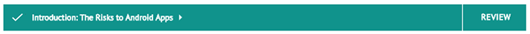

Exploring the Dashboard
When you first log into Synopsys eLearning, you are directed to the Dashboard area. The Dashboard summarizes your progress and achievements as you take our courses.
Most likely, the courses you will take will be assigned to you from a manager or supervisor within your company. Therefore, the courses made available to you will most likely reflect the kind of training your company feels is best for your professional development.
Header:
At the top of the Dashboard is the Header, which contains several controls.
Dashboard Button:
Clicking this button navigates you to the Dashboard from any point in the eLearning platform.
Contact Button:
Clicking this button allows you to send email to Synopsys support.
Notifications:
Clicking this button directs you to the Notifications panel, where you can find system messages and notices from your managers. A count of new notifications will show here at the start of each session.
Profile Avatar:
Your profile avatar produces a dropdown containing options for managing your account profile, changing settings, viewing discussions, and logging out.
Summary:
Near the top of the Dashboard is the Summary area.
The Summary area displays the most critical metrics produced from your progress through our courses. These include:
Number of Assigned Courses in Curriculum: Your curriculum reflects the total number of courses assigned to you through one or more cohorts. A cohort is defined as a group of learners sharing the same course assignments determined by their manager.
Amount of Curriculum Completed: This value, stated as a percentage, reflects how many assigned courses you have completed against the total number of courses within your curriculum.
Number of Assessments Passed: This metric reflects how many of your completed knowledge assessments resulted in a passing score. A knowledge assessment is a multiple-choice quiz that measures a learner's understanding of the course material. Usually, a learner takes the knowledge assessment after all lessons in any particular course have been marked as completed. In almost all cases, a course is considered completed only when all lessons are completed and the learner earns a passing score on its associated knowledge assessment.
Curriculum:
Under the Summary area is the Curriculum area.
The Curriculum section displays those courses that have been assigned to you by your manager or supervisor. There are several options to view and organize those courses:
Keyword Search:
Enter a keyword into the search field to view only courses assigned to you that are associated with that keyword.
Course Filters:
The Curriculum section also provides several filter options to help you look for specific courses. Courses may be filtered by the following criteria:
Only one criteria may be selected at one time. Selecting an option in one dropdown may affect the available choices in others. The Reset All option returns the dropdown filters to their default selections. The filter criteria are described in more detail below.
Filter By Status:
The Filter By Status dropdown allows you to filter the displayed courses based on their state of progress:
All Status: Shows all courses assigned to you, regardless of status.
Courses in progress: Displays courses that you have started but have not completed (by viewing all lessons and passing the course's knowledge assessment).
Courses not started: Displays courses assigned to you that you have not begun.
Courses completed: Displays courses you have completed (that is, have viewed or engaged with all lessons and have passed the final knowledge assessment).
Filter By Cohorts:
The Filter by Cohort dropdown filter will be populated with the names of all cohorts you are assigned to, and by extension, the courses assigned to those cohorts.
Filter By Categories:
The Filter by Category dropdown allows you to filter displayed courses based on the categories to which they are assigned.
Course Tiles:
Beneath the Course Filters can be found the courses themselves. Each course assigned to you is represented by a rectangular tile. You can hover your cursor over these tiles to view a brief course description. Course tiles display the course name, its difficulty level, and the amount of time it should take you to complete the course.
The course status is indicated at the bottom of each tile, as described below.
Course Not Started:
A course you have not started will display an empty progress bar at the bottom of its tile and a Start button. Clicking Start directs you to the course's landing page, which will contain more course information and a course outline.
Course In Progress:
(Knowledge Assessment not taken)
(Knowledge Assessment taken and not passed)
Courses with an In Progress status display a Continue button. Clicking Continue will navigate you to the point in the course where you last left off.
Progress is In Progress, courses is indicated in two ways. If you have begun the course but not yet finished the lessons, a partly filled progress bar is displayed at the bottom of the course tile. If you have finished the lessons but not yet taken or successfully passed the knowledge assessment, the tile will display the resulting score from the last attempt, along with the number of attempts you've made.
The Continue button will be displayed until you have successfully completed all lessons and passed the knowledge assessment for the course.
Course Completed:
Once you have completed a course, your final assessment score will be displayed at the bottom of the course tile, along with the number of attempts. The Review action button is displayed; clicking it allows you to review any lesson in the course and even re-take the knowledge assessment (although your additional score will not be recorded).
View More Button:
Depending on how many courses assigned are assigned to you, you may see a View More button at the bottom of the Dashboard. Clicking this button will display any additional courses assigned to you.
Starting or Continuing a Course
Course Tile > Start Button:
From the eLearning Dashboard, you can begin any newly assigned course by clicking the Start button on its course tile. This will navigate you to the course's landing page.
Course Landing Page:
The course landing page displays the following information:
- Length of the course
- Estimated time to complete
- Difficulty level
- Course description
- Intended audience
- Prerequisite courses
- Learner objectives
- Discussions relating to the course
Course Outline:
The course landing page also presents a course outline, which lists each lesson and the knowledge assessment. Clicking on a lesson displays an expanded view that lists the sections within the lesson.
Starting a Course from the Start Course Button:
To open a course from the beginning, you can click the Start Course button at the top of the landing page.
Starting a Course from the Course Outline:
To begin any lesson, click the Start button on its row.
Navigating Through Lessons
Each course is a compilation of lessons (divided into sections) and a knowledge assessment (meant to be taken after all the lessons have been completed). The lessons and the knowledge assessment are viewed through the Lesson Player.
Lesson Player:
The Lesson Player displays each lesson's content sections in order on a vertically scrolling webpage. At the top of the webpage below the Header are a couple of helpful elements.
Breadcrumb Title:

The breadcrumb title displays the course name and the current lesson. Clicking the name of the parent course will navigate you back to the course landing page.
For more information on the contents of the Lesson Player, click here
Confirming Course Progress
As you work through each lesson in each course, the eLearning platform will track your progress so you can continue working at another time. For example, if you complete only the first two lessons of a course and start working on a third before ending your session, the eLearning platform will remember where you left off when you return.
'Continue' Banner:
On subsequent visits to the eLearning platform, the Dashboard banner will prompt you to continue the last course you worked on. Clicking Yes will return you to the Lesson Player, which will load the last lesson you were previously working on. Choosing No will dismiss the banner, and no action will be taken.
Course Landing Page 'In Progress':
Course Outline 'In Progress':
If you navigate back to the course landing page from the Lesson Player's breadcrumb title (see above) while a lesson is still being worked on, the course landing page will reflect your progress as well. Lessons that are in progress will display a half-circle next to each lesson's listing, and a Continue button. Clicking Continue will navigate you back to the Lesson Player and the last lesson you were working on.
'Continue' Button:
The larger Start Course button now reads Continue Course,, signifying that the course is currently in progress. Clicking this will navigate you back to the Lesson Player and the last lesson you were working on.
Confirming Course Completion
When you finally complete a course, you are presented with a message congratulating you.
Course Completion Message:
The message confirms your knowledge assessment score and offer a choice of actions. Review Assessment Results dismisses the message and allows you to review your answers on the knowledge assessment. Clicking Finish closes the Lesson Player and returns you to the Dashboard.
Course Tile 'Completed':
On the Dashboard, the course indicates you have completed the course (as described above). If desired, you can click Review to return to the course landing page.
Course Landing Page 'Completed':

The course landing page changes its state to show that the course has been completed.
Course Outline 'Review':
'Review' Button:
Clicking the Review button from anywhere on the course landing page allows you to revisit the lessons and knowledge assessment you took.
Certificates of Completion:
As you complete a series of courses assigned to you through one or more cohorts, your manager may decide to confer a certificate upon you and your fellow learners. Any such certificates are found on the Dashboard in their own dedicated section.
Dashboard > Certificates of Completion > Opened Certificate
When clicked on, the tile will open a preview window where the certificate can be viewed and printed out.
Starting a Course on a SCORM-based LMS
Course Start Page:
The start page displays an introduction of the course and a tile representing each lesson associated with the course. You can start the course in any order by choosing the "view" button on any lesson tile to start, but we recommend taking each lesson in sequential order.The progress indicator in the lower right-hand corner of the lesson tile will reflect your advancement through the lesson.
Navigating Through Lessons
Courses are a compilation of lessons, and lessons are made up of related content sections. Each course also contains a knowledge assessment to be taken after you've completed all the lessons. The lessons and the knowledge assessment are viewed through the Lesson Player.
Lesson Player:
The Lesson Player displays each lesson's content sections in sequential order in a vertically scrolling webpage. At the top of the webpage are several helpful elements.
Home Button:
Clicking the Home button will direct you back to the course's start page from any lesson.
Progress Bar:
As you scroll through each lesson, the progress bar will reflect your advancement. When the progress bar is full, you have completed the lesson. If you reach the bottom of the lesson's webpage and the progress bar does not appear to be full, you have not fully engaged with a particular content section (for example, you may not have watched a video to the end). In such cases, the system will not allow you to click Continue to navigate to the next lesson. The player will inform you of the sections you need to complete (more on this below).
Close Button:
Clicking the Close button will close the Player, and end the learning session. Tip: if possible complete the lesson before clicking the close button to ensure progress is not lost.
Different Types of Content Sections:
Courses are designed to keep learners engaged and accommodate diverse learning styles. As you work through the lesson by scrolling through the webpage, you will encounter different types of content in a sequence of stacked sections. Each content section can contain different types of interactive components:
- Videos: All videos in the lesson must play from beginning to end.
- Accordion: This component displays clickable titles, which reveal display text.
- Expose: Content is hidden behind covers. Click the cover and expose the content below.
- Filmcard: A presentation component which displays one or more images which reveal text when clicked, with a flip card effect.
- Flipper: Displays lists of items one at a time. When the learner clicks on the component it flips to the next item.
- Graphic Multiple Choice Questions: A multiple choice question component, with images
- Hot Graphic: A contributed hot graphic component that enables a user to click on hot spots over an image and display a detailed popup that includes an image with text.
- ImageSlider: A component that displays an image gallery
- Matching Questions: A question component that allows the learner to match the options to question stems
- Multiple Choice Questions: A multiple choice question component
- Narrative: A component that displays an image gallery with accompanying text
Completing Knowledge Checks:
Knowledge checks are usually found at the end of a lesson, after the content sections. The questions must be answered correctly to proceed to the next lesson. If you answer a knowledge check question incorrectly, you must reset the form and try again. When the knowledge check is answered correctly and all content sections are completed, you may then move on to the next lesson. You can take the knowledge check as many times as you want until you arrive at the correct answer. Note: Knowledge checks should not be confused with knowledge assessments. Knowledge checks have no bearing on your knowledge assessment score.
Incomplete Warning Message:
All content sections in a lesson contain text, media, or interactive exercises that must be carefully read, viewed, or interacted with in their entirety before you can proceed to the next lesson. If you attempt to proceed to the next lesson without completing all content sections and knowledge checks, the system will warn you and indicate where within the lesson the incomplete content sections are. By using the the red square/white arrow button in the header, you can quickly skip to those sections in sequence in order to properly complete them.
After successfully completing those sections, you can navigate to the next lesson by clicking the Next button.
IMPORTANT: The system will not consider the lesson complete unless you click the Next button.
Taking the Knowledge Assessment
After you have completed all the lessons in the course, you must take and pass a final knowledge assessment.
The knowledge assessment is the multiple-choice quiz measures knowledge retention of course material. The minimum passing score is 80%. Once you have completed all lessons and passed the knowledge assessment, the course in its entirety will be considered complete.
To take an assessment, select your answer for each question, then click the Submit button at the bottom to generate your score and review the results of your answers.
Assessment Review:
When submitted questions will be marked as correct or incorrect. Additional response feedback is provided to further help learners understand the content discussed in the question.
Score Results:
The assessment review shows your results from the knowledge assessment and your total score. From here, you can review your results and, if needed, take the knowledge assessment again. You can take the knowledge assessment as many times as you like until you achieve a passing score of 80% or higher.
Confirming Course Progress
Start Page Tile: Not Started
The View button will be displayed on the tile of lessons that you have not yet started.
Start Page Tile: In Progress
As you work through each lesson in each course, the Lesson Player will track your progress so you can continue working at another time. For example, if you complete only the first two lessons of a course and start working on a third before ending your session, the Lesson Player will remember where you left off when you return.
Start Page Tile: Completed
The start page will also indicate which lessons you completed by displaying a full progress bar in the lesson tile.